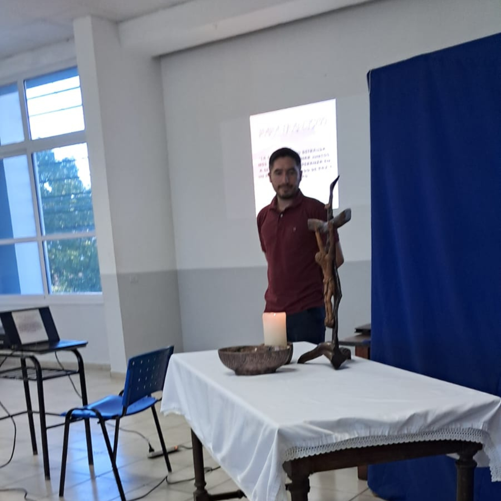
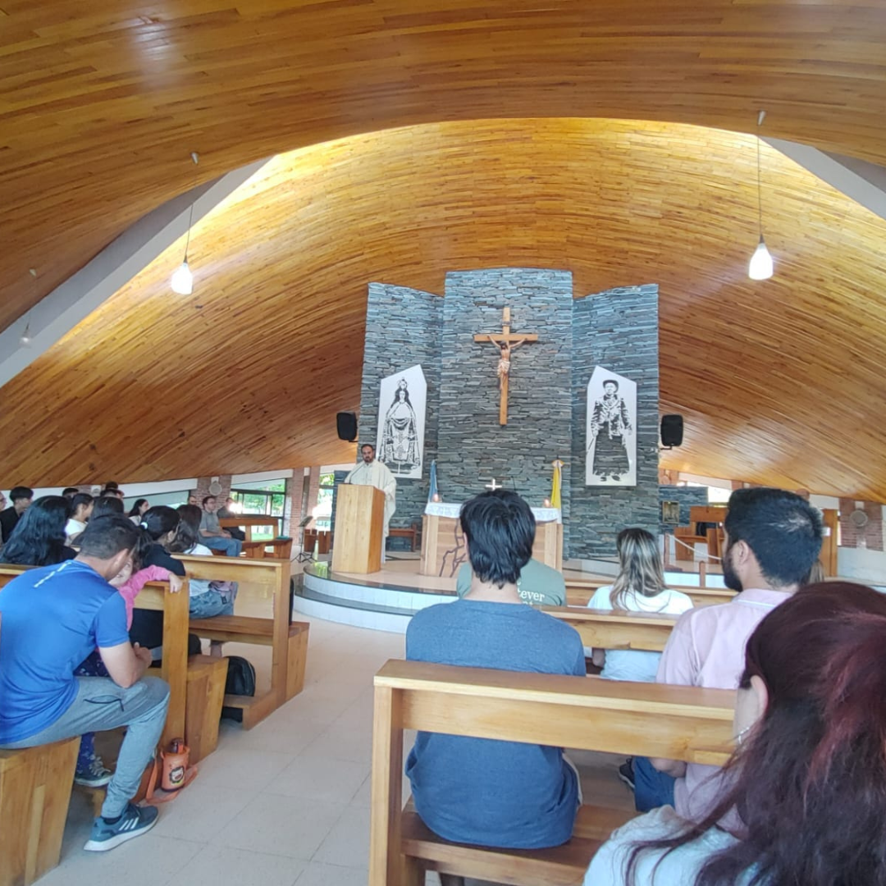
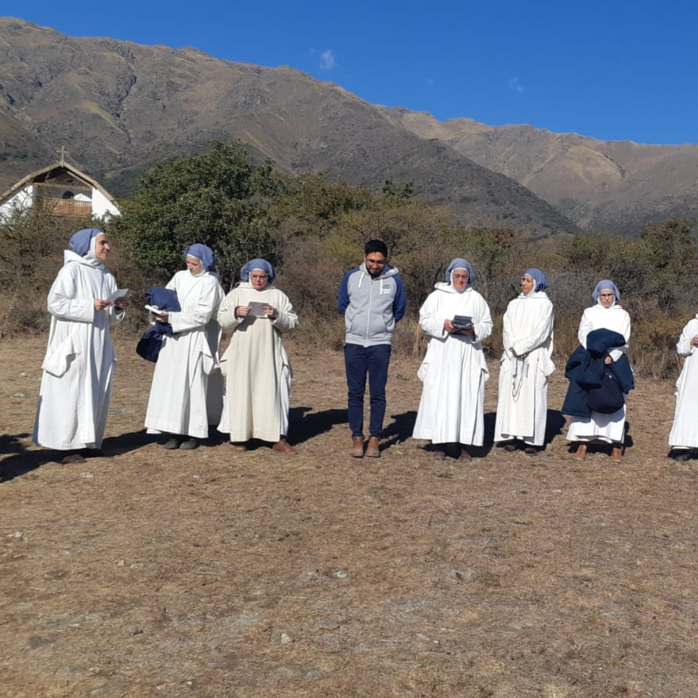
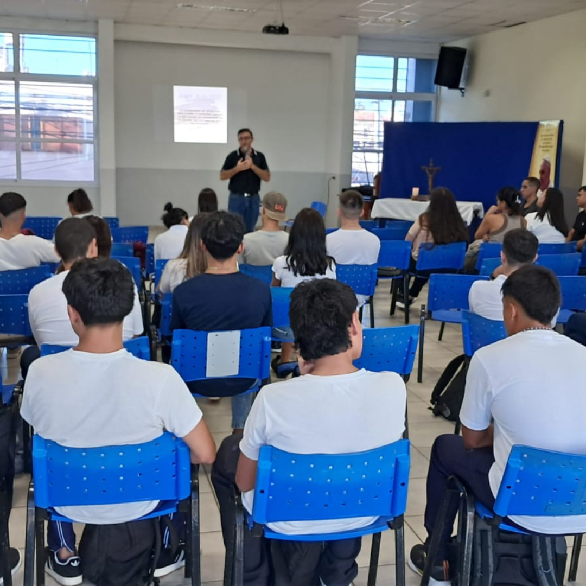
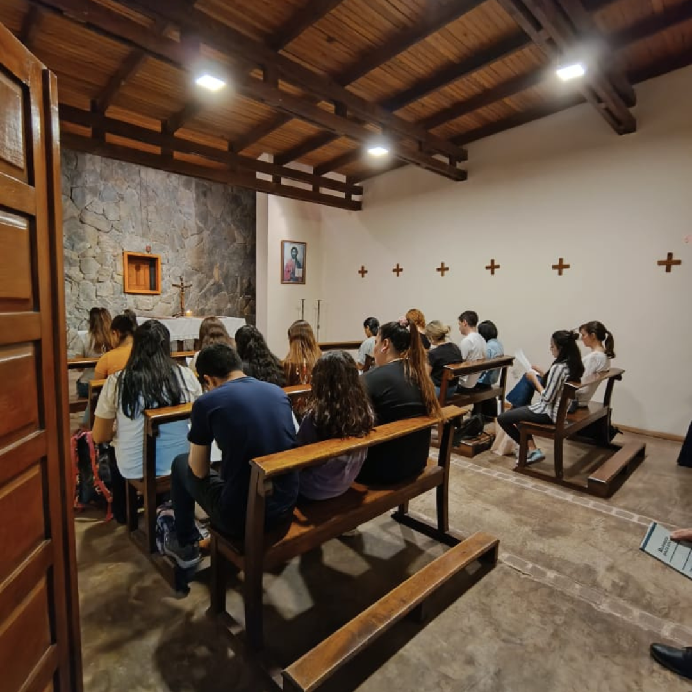

Cursillo de ingreso
Comenzando el ciclo lectivo 2025.

Eucarstía en Cura Brochero
Agradeceiendo el camino recorrido.

Visita al Monasterio de Belén
Conociendo los Carismas de la Iglesia.

Cursillo de ingreso
Comenzando el ciclo lectivo 2025.

Celebración con estudiantes de Prácticas
En oración, preparamos las Prácticas Docentes.